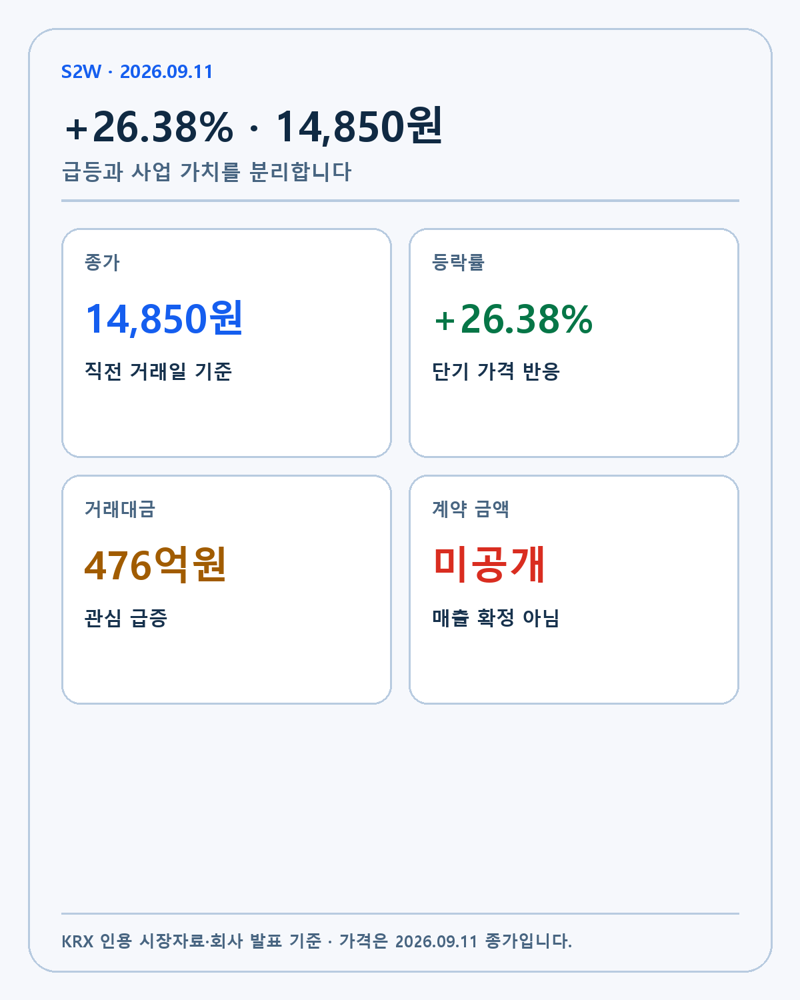
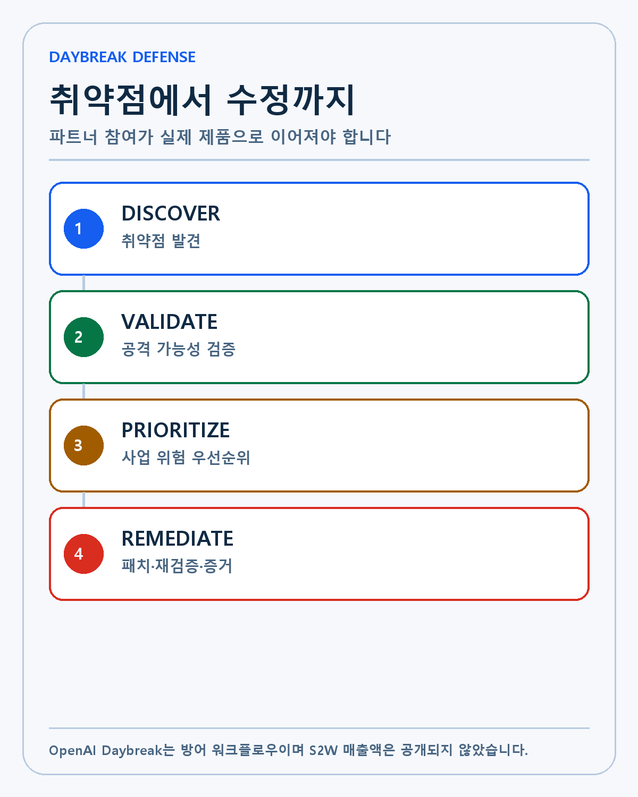
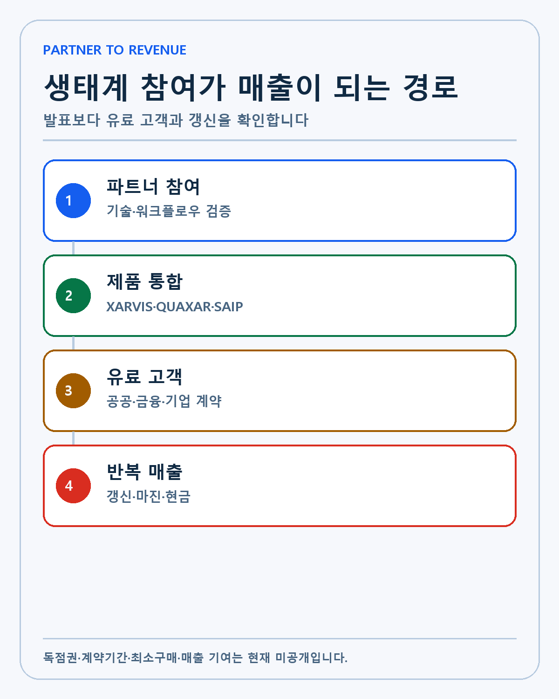
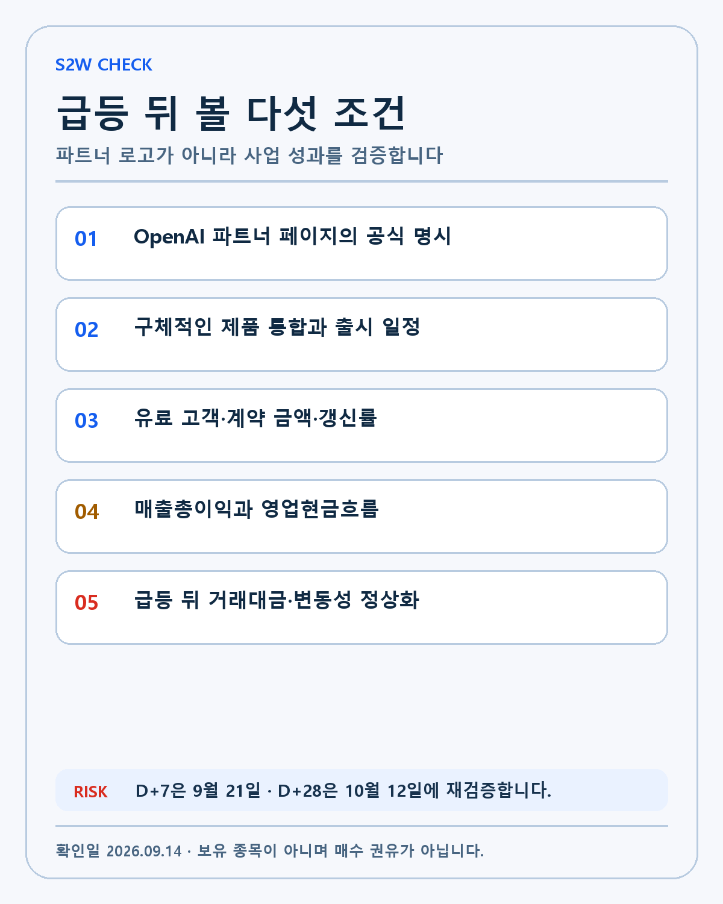

S2W × OPENAI · DEEP RESEARCH
S2W·OpenAI Daybreak 심층 분석: 26.38% 급등이 제품·계약·반복 매출로 바뀌는 조건
S2W의 Daybreak 참여와 26.38% 급등을 제품 통합·유료 계약·갱신·반복 매출·현금흐름으로 나눠 검증합니다.
2026년 9월 11일 에스투더블유(S2W) 주가는 1만4850원으로 마감하며 하루 동안 26.38% 올랐습니다. 약세장이었던 국내 시장에서 AI 보안 관련주에 자금이 집중됐고 S2W의 거래대금은 약 476억원으로 늘었습니다. 촉매는 오픈AI의 사이버 방어 생태계인 Daybreak Defense Network 참여 발표였습니다.
가격 반응과 사업 가치 사이에는 여러 단계가 남아 있습니다. S2W가 네트워크에 참여한다는 사실은 확인됐습니다. 오픈AI의 프런티어 사이버 모델과 S2W의 위협정보·보안 제품을 연결하는 방향도 공개됐습니다. 그러나 계약 금액, 최소 구매, 독점권, 구체적인 제품 출시일과 매출 인식은 공개되지 않았습니다.
이 리서치는 급등 종목을 추천하기 위한 글이 아닙니다. 국내 거래대금과 상승률 상위 종목을 매일 확인하되, 회사 공시와 공식 기술 자료로 설명되지 않는 가격 움직임은 투자 논리에서 제외한다는 원칙을 적용합니다. 작성·검증 기준일은 2026년 9월 14일입니다.
FACT: 9월 11일 가격과 거래대금

9월 11일 국내시장 거래대금 상위 자료는 S2W의 종가를 1만4850원, 등락률을 +26.38%, 거래대금을 약 476억원으로 집계했습니다. 같은 자료에서 소프트웨어·보안 묶음은 여러 종목이 동시에 급등했습니다. 에스피소프트, 엑스게이트와 드림시큐리티도 강하게 올랐습니다.
| 구분 | 2026년 9월 11일 기준 | 투자 해석의 한계 |
|---|---|---|
| S2W 종가 | 14,850원 | 다음 거래일 가격이 아님 |
| 하루 등락률 | +26.38% | 기업가치가 같은 비율로 증가했다는 뜻이 아님 |
| 거래대금 | 약 476억원 | 지속적인 기관 수요인지 미확정 |
| 섹터 반응 | 보안·소프트웨어 동반 강세 | 개별 기업 재평가와 테마 유입을 분리해야 함 |
| 공개 계약액 | 없음 | 파트너 참여를 매출로 계산할 수 없음 |
코스피와 코스닥이 약한 날 여러 보안주가 함께 올랐다는 사실은 Daybreak 뉴스가 S2W 한 회사만의 개별 재료로 소비되지 않았다는 점을 보여 줍니다. 단기 테마 자금이 섞였을 가능성을 열어 둬야 합니다.
가격 자료는 거래일이 바뀌면 즉시 낡습니다. 이 글의 1만4850원과 26.38%는 9월 11일 종가라는 경계를 유지합니다. 발행 뒤 현재가처럼 인용하지 않습니다.
FACT: S2W가 발표한 참여 범위
S2W의 Daybreak 참여 발표를 전한 보도에 따르면 회사는 Daybreak Defense Network에 참여합니다. 발표된 업무 범위는 취약점 발견·검증·해결, 위협 모델링과 보안 조사입니다. 오픈AI의 프런티어 사이버 역량, 보안 가드레일과 자율형 에이전트를 S2W 기술·제품에 연결하는 방안을 검토합니다.
회사 경영진은 인터폴과 아시아·중동·유럽 정부기관의 협력 레퍼런스, 마이크로소프트 생태계 참여 경험이 네트워크 합류에 도움이 됐다고 설명했습니다. 이 발언은 S2W가 공공 보안 분야에서 쌓은 신뢰를 글로벌 사업에 활용하려는 전략을 보여 줍니다.
아직 ‘검토’ 단계인 내용도 많습니다. 어떤 제품에 어떤 모델을 넣는지, 고객 데이터와 코드가 어느 환경에서 처리되는지, 오탐과 잘못된 패치의 책임을 누가 지는지 공개되지 않았습니다. 파트너 선정과 상용 제품 완성은 같은 단계가 아닙니다.
FACT: Daybreak가 해결하려는 문제

오픈AI의 Daybreak 공식 소개는 AI 사이버 역량을 취약점 발견에만 사용하지 않습니다. 발견한 문제가 실제 공격에 쓰일 수 있는지 검증하고, 조직의 중요 자산에 따라 우선순위를 정하며, 패치를 만들고 테스트한 뒤 사람이 검토할 수 있도록 증거를 남기는 흐름을 목표로 합니다.
이 구조가 필요한 이유는 취약점 수와 위험이 일치하지 않기 때문입니다. 코드 스캐너가 수천 건을 찾아도 인터넷에서 접근할 수 없거나 이미 완화된 문제가 섞일 수 있습니다. 반대로 한 건의 인증 우회나 공급망 취약점이 핵심 시스템 전체에 영향을 줄 수도 있습니다.
보안팀은 다음 질문에 답해야 합니다.
- 문제가 실제 운영 환경에서 재현되는가.
- 공격자가 접근할 경로가 있는가.
- 어떤 고객·데이터·서비스에 피해가 생기는가.
- 패치가 다른 기능을 깨뜨리지 않는가.
- 수정 뒤 같은 경로가 다시 열리지 않았는가.
Daybreak는 프런티어 모델, Codex Security 워크플로우와 전문 파트너를 결합해 이 전체 주기를 줄이려 합니다. 사람의 승인과 통제를 없애는 자동 공격 도구가 아니라 승인된 방어자가 검증 가능한 결과를 만드는 데 초점을 둡니다.
FACT: 10억달러 글로벌 약속의 정확한 범위
오픈AI는 9월 3일 최전선 방어자를 위한 Daybreak에 10억달러를 투입한다고 발표했습니다. 보조된 접근, 교육, 기술지원과 파트너십을 통해 미국과 다른 국가의 핵심 서비스 방어를 돕는 계획입니다. 물·전력·지방정부·금융 같은 중요 인프라가 대상에 포함됩니다.
10억달러는 S2W의 계약액이 아닙니다. 오픈AI가 전 세계 프로그램에 투입하는 접근·지원·파트너십 전체 금액입니다. S2W에 할당된 현금이나 크레딧, 공동 고객 수와 매출 배분은 공개되지 않았습니다.
큰 숫자를 개별 회사 가치에 바로 더하면 두 가지 오류가 생깁니다. 첫째, 비용 지원과 기업 매출을 혼동합니다. 둘째, 여러 파트너가 공유하는 생태계 예산을 한 회사의 수주처럼 계산합니다. 이 글에서는 10억달러를 시장 규모의 방향으로만 보고 S2W 재무모델에는 넣지 않습니다.
기술 연결: S2W가 가진 데이터와 제품
S2W의 공식 기술 페이지는 회사의 핵심을 도메인 특화 언어모델, 지식그래프와 생성형 AI로 설명합니다. 공개된 제품에는 사이버범죄 인텔리전스 XARVIS, 가상자산 인텔리전스 EYEZ, 사이버 위협 인텔리전스 QUAXAR와 기업 데이터 운영 플랫폼 SAIP가 있습니다.
S2W는 일반 인터넷 문서만 다루지 않습니다. 다크웹과 텔레그램, 사이버범죄자 관계, 악성 인프라와 공격 캠페인을 수집·분류해 연결합니다. 도메인 지식그래프는 계정, 지갑, 도메인, 악성코드와 위협행위자의 관계를 같은 맥락에서 추적하는 데 사용할 수 있습니다.
프런티어 모델은 코드를 이해하고 취약점과 패치를 추론하는 데 강점을 가질 수 있습니다. S2W는 공격자와 사건, 고객 산업과 중요 자산이라는 도메인 맥락을 제공할 수 있습니다. 둘이 결합하면 ‘이 코드에 문제가 있다’에서 ‘이 취약점이 어떤 공격 캠페인과 연결되고 어느 고객에게 먼저 위험한가’로 질문을 확장할 가능성이 생깁니다.
경쟁력: 데이터 해자와 범용 모델의 긴장
S2W의 장기 해자가 되려면 자체 데이터와 지식그래프가 범용 모델로 쉽게 대체되지 않아야 합니다. 다크웹 원천에 대한 지속적인 접근, 언어·지역별 분석, 정부기관과의 신뢰, 장기간 축적된 위협행위자 관계는 단순 모델 호출보다 복제하기 어렵습니다.
반대 방향도 있습니다. 오픈AI와 글로벌 보안기업이 제품 기능을 빠르게 넓히면 일부 분석·요약·패치 기능은 범용화될 수 있습니다. 고객이 S2W 플랫폼을 따로 구매할 이유가 약해질 가능성도 있습니다. 따라서 ‘최고 모델과 협력한다’보다 ‘자체 데이터와 고객 워크플로우가 모델을 더 유용하게 만든다’를 증명해야 합니다.
기술 해자의 측정 지표는 모델 벤치마크 하나가 아닙니다. 탐지 정확도, 오탐률, 조사시간, 공격 경로 검증률, 패치 채택률과 고객 갱신률을 봐야 합니다. 고객이 같은 제품을 더 넓은 조직과 데이터에 확장하는지도 중요합니다.
제품화: 네 단계가 필요합니다

1. 공동 기술 검증
Daybreak 모델이 S2W 데이터와 제품에서 어떤 업무를 수행할지 정합니다. 취약점 탐색, 위협정보 보강, 사건 우선순위, 패치 검증 가운데 실제 사용 범위를 공개해야 합니다. 모델이 고객의 민감한 코드·로그에 접근하는 권한과 감사기록도 필요합니다.
2. 제품 통합
기존 XARVIS·QUAXAR·SAIP 고객이 업그레이드로 기능을 사용할 수 있는지, 별도 구축 프로젝트가 필요한지에 따라 확장성이 달라집니다. 고객마다 긴 통합이 필요하면 매출은 늘어도 인력 비용이 함께 커질 수 있습니다.
3. 유료 계약
파일럿과 기술검증이 공공기관·금융·제조 고객의 정식 계약으로 바뀌어야 합니다. 계약 금액, 기간, 사용자 수, 데이터 범위와 갱신 조건이 확인돼야 매출 기여를 추정할 수 있습니다. 오픈AI가 고객을 소개하는지 S2W가 직접 판매하는지도 중요합니다.
4. 반복 매출과 현금
구축 뒤 같은 고객이 갱신하고 다른 부서와 국가로 확대해야 합니다. 모델 사용 비용과 클라우드·인력비를 뺀 매출총이익, 영업현금흐름이 개선돼야 파트너십이 주주가치로 이동합니다.
글로벌 레퍼런스의 의미와 한계
S2W의 일본법인 공식 자료는 일본 정부기관과의 계약을 갱신했고 이전보다 3.5배 이상 규모가 커졌다고 설명합니다. 인터폴·OSCE 국제 공조 지원과 여러 국가 공공기관 협력도 회사 뉴스룸에 공개돼 있습니다.
공공 보안 고객은 기술뿐 아니라 데이터 취급, 보안 검증과 공급자 신뢰를 요구합니다. 이런 레퍼런스는 Daybreak 기능을 정부와 중요 인프라에 판매할 때 진입장벽을 낮출 수 있습니다.
그러나 과거 계약이 새로운 Daybreak 계약을 보장하지는 않습니다. 정부 조달은 예산과 규제, 국가별 데이터 주권과 긴 검증기간에 영향을 받습니다. 특정 해외기관 이름을 반복하는 것보다 2026년 신규 계약, 매출 인식과 갱신을 확인해야 합니다.
경쟁: 파트너 네트워크 안에서도 선택받아야 합니다
OpenAI의 파트너 안내에는 글로벌 보안 플랫폼, 클라우드·네트워크 사업자, 컨설팅 회사와 전문 보안 조직이 함께 소개됩니다. 파트너는 제품 통합과 관리형 서비스 방식으로 Daybreak를 고객에게 제공합니다.
S2W는 한국어·아시아 위협정보, 다크웹 데이터와 공공부문 경험으로 차별화할 수 있습니다. 동시에 글로벌 고객은 Palo Alto Networks, CrowdStrike, Cloudflare, Fortinet 같은 기존 보안 공급자의 통합 제품을 선택할 수 있습니다. 네트워크 가입은 경쟁 면제가 아니라 더 큰 경쟁시장에 들어가는 일입니다.
독점권이 공개되지 않은 만큼 특정 지역이나 산업을 S2W가 단독으로 맡는다고 가정하지 않습니다. 오픈AI가 직접 기능을 확장하거나 다른 파트너가 비슷한 서비스를 제공할 가능성도 열어 둡니다.
시장 반응과 기업 규모의 위험
26.38% 급등은 새로운 정보가 빠르게 가격에 반영됐다는 신호입니다. 동시에 작은 시가총액과 제한된 유통물량에서는 매수세가 몰릴 때 가격이 크게 움직일 수 있습니다. 거래대금이 커졌다는 사실은 유동성 개선을 보여 주지만 장기 기관 수요나 실적 기대의 지속성을 증명하지 않습니다.
사용자의 투자 기준은 미래에 필요한 기술, 기술 해자, 창업자와 경영진, 성장률과 현금흐름입니다. 또한 지나치게 작은 시가총액의 테마주는 피합니다. S2W의 기술은 관심 대상이 될 수 있지만 현재 규모와 공개된 계약 경제성은 포트폴리오 편입 기준을 충족했다고 보기 어렵습니다.
검색 수요가 큰 급등주를 분석하는 것과 그 종목을 매수하는 것은 별개입니다. 이 글의 목적은 급등 이유를 설명하고 다음 검증 조건을 남기는 것입니다.
세 가지 시나리오
강세
S2W가 OpenAI 공식 파트너 목록에서 역할을 명확히 받고 QUAXAR·XARVIS·SAIP에 Daybreak 기능을 출시합니다. 국내외 정부·금융·기업 고객이 유료 계약으로 전환되고 계약 금액과 갱신이 공개됩니다. 매출 증가와 함께 매출총이익, 영업현금흐름이 개선됩니다.
기준
기술검증과 공동 마케팅은 이어지지만 고객의 데이터·규제 검토가 길어집니다. 일부 파일럿과 서비스 매출은 생기지만 표준 제품의 반복 판매로 이동하는 데 시간이 걸립니다. 기술 신뢰와 해외 접점은 높아져도 단기 주가를 정당화할 재무 숫자는 부족할 수 있습니다.
약세
네트워크 참여가 행사·로고와 검토 발표에 머물고 구체적인 제품 통합이 나오지 않습니다. 유료 고객·계약 금액과 갱신이 확인되지 않고 인력·모델 사용비가 늘어 수익성이 약해집니다. 급등 뒤 거래대금이 감소하면 기대가 빠르게 되돌려질 수 있습니다.
무효화 조건과 확인표

- OpenAI 공식 파트너 페이지에서 S2W의 역할이 장기간 확인되지 않습니다.
- 2026년 안에 구체적인 제품 기능이나 출시 일정이 나오지 않습니다.
- 파일럿이 유료 계약으로 전환되지 않고 고객 수·계약 금액·갱신률이 공개되지 않습니다.
- 매출이 늘어도 매출총이익과 영업현금흐름이 악화합니다.
- 급등 뒤 거래대금만 줄고 회사의 후속 공시·제품·고객 발표가 없습니다.
제 판단
S2W의 Daybreak 참여는 회사 기술과 해외 공공부문 신뢰가 글로벌 AI 보안 생태계에 연결된 사건입니다. AI가 취약점을 찾는 속도가 빨라질수록 검증·우선순위·패치와 증거를 담당하는 방어 플랫폼의 필요성은 커질 수 있습니다. S2W의 도메인 데이터와 지식그래프는 이 문제에 맞는 자산입니다.
하지만 좋은 기술 방향이 곧 좋은 투자 가격을 뜻하지는 않습니다. 10억달러 프로그램 전체를 S2W 매출로 계산할 수 없고 계약 조건과 제품 일정도 없습니다. 작은 시가총액과 급등 변동성은 제 투자 기준에서 추가 위험입니다.
따라서 지금의 판단은 관찰입니다. 파트너십이 제품, 유료 고객, 갱신과 현금흐름으로 이동하는지 확인한 뒤 투자 대상으로 다시 평가하겠습니다. 가격이 더 오르거나 내리는 것보다 사업의 증거가 쌓이는 순서를 우선합니다.
D+7인 9월 21일에는 공식 파트너 명시, 후속 제품 설명과 거래대금을 확인합니다. D+28인 10월 12일에는 계약·고객·실적 공시와 수익성 경로를 다시 봅니다.
이 글은 국내 급등 종목과 AI 보안 산업을 공부한 개인 리서치입니다. S2W는 현재 보유 종목이 아니며 특정 종목의 매수·매도를 권유하지 않습니다. 파트너십과 사업 시나리오는 실제 결과와 다를 수 있고 모든 투자 판단과 책임은 투자자 본인에게 있습니다.
작성 방법
2026년 9월 14일 기준 공식 자료와 공시를 우선하고 사실·회사 전망·시나리오·UNKNOWN을 분리했습니다.
개인 투자 기록이며 특정 종목의 매수·매도를 권유하지 않습니다.